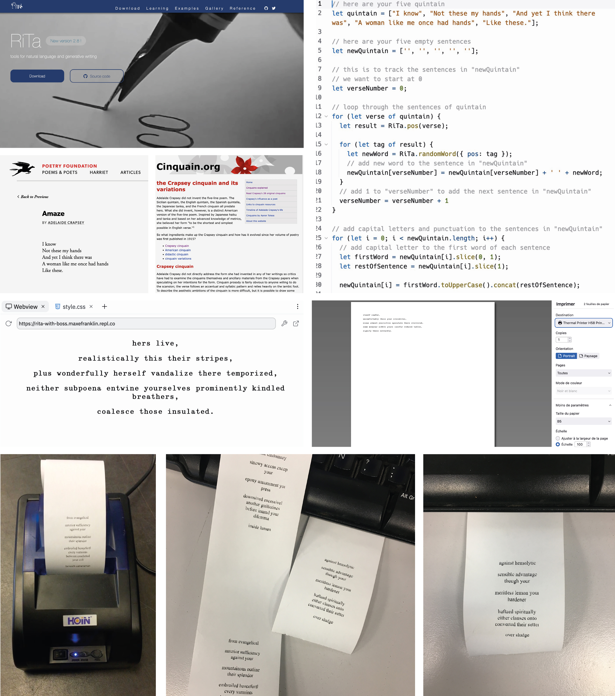

A New *New* Program
for Graphic Design
Access, Community, Free
A Project by
Lucrezia Russo
Table of Contents
IntroductionGeneral Description
Access, Community, Free: Core Values
ObjectivesThree Axes / Three Labs
Access: Digital Fabrication
Community: Creative Coding
Free: HTML/CSS-to-Print
Projects
Mobile Uno
Amaze
Nos Beaux Arts
Notes About Our Values
Openness and Freedom
Flexibility
Inclusion and Respect
How could we dismantle the dominant logic [of closed software] if we do not react? In the closed environment where the students are trained for their own alienation, schools have an essential role in changing the world the software industry promises. We dream of schools dedicating their budgets to free software creation, instructors’ training, and studio materials; schools that would build and redistribute free software, using it—why not?—as a means of communication. How many failures do we need to open our eyes, finally?
— OSP, “Visual Culture Open Source Publishing, Git et Le Design Graphique,” 2014, http://strabic.fr/OSP-Visual-Culture
— OSP, “Visual Culture Open Source Publishing,
Git et Le Design Graphique,” 2014
http://strabic.fr/OSP-Visual-Culture
Git et Le Design Graphique,” 2014
http://strabic.fr/OSP-Visual-Culture
Introduction
As an educator in graphic design, I find myself constantly questioning the traditional practices and education in this field, especially in light of the rapid technological changes that shape our world. How can design programs stay relevant in the face of such quick advancements? Is what I teach truly important and relevant in today’s ever-changing landscape? Am I teaching in a responsible and aware manner?While keeping up with technological advancements can partially equip students for their future careers, relying solely on technical skills in our teaching is insufficient. Furthermore, depending too heavily on standardized digital tools can flatten aesthetics and turn future professionals into mere executors rather than creative innovators. We must focus on teaching students how to learn, fostering critical thinking skills, and promoting values that go beyond hard skills.
What if we shifted the paradigm of graphic design education to prioritize values over a technicality? This questioning has inspired me to propose—as part of my master’s thesis in Transdisciplinary New Media—a graphic design program: an experiment that focuses on approaching projects considering contemporary issues such as accessibility and affordability as part of the learning environment.
This program is open and free, intended to be shared, copied, used, and nurtured by the community. The ambition is to propose a collaborative project aimed at reimagining graphic design education in a way that fosters values, flexibility, and critical thinking skills. I hope this proposal will be activated in various ways, with people appropriating and contributing to its growth.
In this publication, you will read the general description of the program, its objectives, and the description of each learning component. To read about our values and commitments, refer to the last section, Notes About Our Values. Finally, if you want to know more about the theoretical references related to this project, you can read my master’s Thesis, From Processing to Design: Free Open Source Culture and the Redefinition of Contemporary Graphic Design Practice.
General Description
A New *New* Program for Graphic Design is a proposal for an open program aiming to distance the
graphic
design practice from standardized production methods and aesthetics. By adopting free open source tools
and
fostering alternative methodologies, this program wants to encompass values of accessibility and inclusion
as critical parts of the learning experience.
Access, Community, and Free are the three principal axes of each learning component. The program seeks to develop working laboratories where the hybridization of tools, DIY distribution methods, participatory generative design, and the use of the web as an open framework become valid propositions for a renewal of the practice based on responsibility and flexibility.
Can we shape a graphic design practice by prioritizing critical thinking and ethical values instead of technical skills and design components? Can we teach graphic design within an environment that incorporates an interdisciplinary approach and collaborative methodologies, liberating graphic design production from the dominance of technological infrastructures? Inspired by teaching and research experiments such as Muriel Cooper’s Visual Language Workshop and built upon the shoulders of the Processing community’s core values, A New *New* Program for Graphic Design tries to answer these questions.
Keywords:
Graphic Design Higher Education, Art and Design School, Teaching Methodologies, Free Open Source Culture
Graphic design history and practice have been intrinsically linked to the technological advancements of its tools. From the development of the movable-type printing press, which redefined typography and created new relationships with alphabets, to the advent of offset printing and photocopy machines that democratized the production and distribution of artist books and fanzines, technology has empowered design aesthetics and methodologies. The introduction of personal computers, notably the first Macintosh in 1984, brought new opportunities for graphic design research and production, enabling methodological and esthetical experimentations. However, as the transition to the 21st century occurred, this momentum dissipated, culminating in a crisis of creative methodologies.
Companies such as Apple, Adobe, and Google have been influential in driving the technological revolution in design. In their efforts to provide easy-to-use computers, interfaces, and tools, they have standardized design aesthetics and fostered the commodification of design culture rather than promoting its democratization. However, since the release, in 2001, of its first programming environment, the Processing community has questioned this paradigm and provided alternatives to creative tools and processes, confronting the commodification of design culture imposed by tech monopolies. Built upon the free and open source approach, the Processing project and community have provided new meanings to the expression “open source,” and have fostered a new vision of shared and decentralized collaboration in fields that not only deal with software development.
Processing has played a vital role in fostering alternative paths in graphic design. Driven by the values of Access, Community, and Free, new patterns in graphic design have emerged: first, the rise of hybrid practices, merging analog and digital tools, showed how the free open source sharing model and DIY methodologies had empowered accessibility and democratized design conception and production (Access). Moreover, the influence of generative design and creative coding revealed how design could focus on “multiple,” as opposed to “universal,” and can open conversations with diverse communities by integrating participatory processes (Community). Finally, reappropriating the publishing realm, leaning on free open source software and using cyberspace as a free publishing framework, subverted the editorial design’s production chain and provided new perspectives in these fields (Free).
By exploring the three axes—Access-Community-Free—this program seeks to demonstrate how graphic designers can reclaim independence from the dominance of giant tech infrastructures, differentiate their work from established dynamics, and shift their practice towards a more inclusive and responsible design. The program underscores the critical importance of accessibility and democratization and the emergence of hybrid and participatory processes in challenging traditional design methodologies.
Access, Community, and Free are the three principal axes of each learning component. The program seeks to develop working laboratories where the hybridization of tools, DIY distribution methods, participatory generative design, and the use of the web as an open framework become valid propositions for a renewal of the practice based on responsibility and flexibility.
Can we shape a graphic design practice by prioritizing critical thinking and ethical values instead of technical skills and design components? Can we teach graphic design within an environment that incorporates an interdisciplinary approach and collaborative methodologies, liberating graphic design production from the dominance of technological infrastructures? Inspired by teaching and research experiments such as Muriel Cooper’s Visual Language Workshop and built upon the shoulders of the Processing community’s core values, A New *New* Program for Graphic Design tries to answer these questions.
Keywords:
Graphic Design Higher Education, Art and Design School, Teaching Methodologies, Free Open Source Culture
Access, Community, Free: Core Values
In 2015, I re-assessed this list and synthesized it to this core:
• Access
• Community
• Free (Libre, Libero)
I feel that with more detail (as I have started to flesh out above), these three points are the core of
Processing and they differentiate its approach from proprietary, consumer-driven software.
— Reas, “Thoughts on Software for the Visual Arts”,
2017
Graphic design history and practice have been intrinsically linked to the technological advancements of its tools. From the development of the movable-type printing press, which redefined typography and created new relationships with alphabets, to the advent of offset printing and photocopy machines that democratized the production and distribution of artist books and fanzines, technology has empowered design aesthetics and methodologies. The introduction of personal computers, notably the first Macintosh in 1984, brought new opportunities for graphic design research and production, enabling methodological and esthetical experimentations. However, as the transition to the 21st century occurred, this momentum dissipated, culminating in a crisis of creative methodologies.
Companies such as Apple, Adobe, and Google have been influential in driving the technological revolution in design. In their efforts to provide easy-to-use computers, interfaces, and tools, they have standardized design aesthetics and fostered the commodification of design culture rather than promoting its democratization. However, since the release, in 2001, of its first programming environment, the Processing community has questioned this paradigm and provided alternatives to creative tools and processes, confronting the commodification of design culture imposed by tech monopolies. Built upon the free and open source approach, the Processing project and community have provided new meanings to the expression “open source,” and have fostered a new vision of shared and decentralized collaboration in fields that not only deal with software development.
Processing has played a vital role in fostering alternative paths in graphic design. Driven by the values of Access, Community, and Free, new patterns in graphic design have emerged: first, the rise of hybrid practices, merging analog and digital tools, showed how the free open source sharing model and DIY methodologies had empowered accessibility and democratized design conception and production (Access). Moreover, the influence of generative design and creative coding revealed how design could focus on “multiple,” as opposed to “universal,” and can open conversations with diverse communities by integrating participatory processes (Community). Finally, reappropriating the publishing realm, leaning on free open source software and using cyberspace as a free publishing framework, subverted the editorial design’s production chain and provided new perspectives in these fields (Free).
By exploring the three axes—Access-Community-Free—this program seeks to demonstrate how graphic designers can reclaim independence from the dominance of giant tech infrastructures, differentiate their work from established dynamics, and shift their practice towards a more inclusive and responsible design. The program underscores the critical importance of accessibility and democratization and the emergence of hybrid and participatory processes in challenging traditional design methodologies.
Objectives
A New New Program for Graphic Design aims to challenge traditional Western art and design education
and
empower graphic designers to ask critical questions about their practice and approach creation from a new
perspective.
Proposed to anyone practicing—or interested in—graphic design (graphic designers, art directors, interactive designers, or “simply” designers), the program wants to challenge standardized design aesthetics, and it does so by providing designers with the critical tools and knowledge necessary to question their working methodology and the tools employed in their practice. The program focuses on soft skills, critical thinking, and values rather than hard and technical skills.
The program also emphasizes the importance of reappropriating tools and, thus, the design practice, seeking to expand the range of graphic design aesthetics.
Finally, by exploring new forms of education that are more open and available, with less hierarchical and more collaborative and networked methodologies, the program implements values of flexibility and inclusion as core values of the teaching and learning process.
Proposed to anyone practicing—or interested in—graphic design (graphic designers, art directors, interactive designers, or “simply” designers), the program wants to challenge standardized design aesthetics, and it does so by providing designers with the critical tools and knowledge necessary to question their working methodology and the tools employed in their practice. The program focuses on soft skills, critical thinking, and values rather than hard and technical skills.
The program also emphasizes the importance of reappropriating tools and, thus, the design practice, seeking to expand the range of graphic design aesthetics.
Finally, by exploring new forms of education that are more open and available, with less hierarchical and more collaborative and networked methodologies, the program implements values of flexibility and inclusion as core values of the teaching and learning process.
Three Axes / Three Labs
The program is structured around the three Processing’s core values: Access, Community, and Free. They
become the main axes of each learning component and frame the approach to the learning experience.
DIY Methodologies, New Craft, Hybrid Practices, 3D modeling, Digital Fabrication
Description:
This laboratory explores the potential of digital fabrication and 3D modeling to broaden the creative process and democratize design practice. Drawing inspiration from free open source and Do It Yourself (DIY) cultures, we employ unconventional methodologies that integrate analog, digital, and computational tools to foster hybrid practices that challenge standardized design aesthetics. The lab places significant importance on combining new technologies with traditional techniques, and we encourage "hacking" as a means to push the participants out of their comfort zones and foster experimentation. By questioning contemporary design processes and tools, we strive to cultivate a more inclusive and diverse design culture, and we encourage re-appropriating creative tools to ensure that the design process remains accessible, affordable, and open to all. Through a series of exercises, participants will have the opportunity to engage in hands-on activities such as using drawing machines to engrave plates for offset printing, employing 3D modeling and printing to produce letterpress elements, utilizing CNC and laser cutters to build portable printing devices.
Some References:
[1] He, Licia,"300 Days with Plotters" by Licia He. https://liciahe.medium.com/300-days-with-plotters-14159ab64034 [2] Molloy, Ryan Workroom Molloy by Ryan Molloy. http://workroommolloy.com/ [3] New North Press "A23D" by New North Press. http://new-north-press.co.uk/project/a23d/ [4] Novotypo Novotypo official website. https://www.novotypo.nl/ [5] Open Press Project Open Press Project official website. https://openpressproject.com/ [6] Provisional Press Provisional Press official website. https://www.provisionalpress.com/
Access: Digital Fabrication
Keywords:DIY Methodologies, New Craft, Hybrid Practices, 3D modeling, Digital Fabrication
Description:
This laboratory explores the potential of digital fabrication and 3D modeling to broaden the creative process and democratize design practice. Drawing inspiration from free open source and Do It Yourself (DIY) cultures, we employ unconventional methodologies that integrate analog, digital, and computational tools to foster hybrid practices that challenge standardized design aesthetics. The lab places significant importance on combining new technologies with traditional techniques, and we encourage "hacking" as a means to push the participants out of their comfort zones and foster experimentation. By questioning contemporary design processes and tools, we strive to cultivate a more inclusive and diverse design culture, and we encourage re-appropriating creative tools to ensure that the design process remains accessible, affordable, and open to all. Through a series of exercises, participants will have the opportunity to engage in hands-on activities such as using drawing machines to engrave plates for offset printing, employing 3D modeling and printing to produce letterpress elements, utilizing CNC and laser cutters to build portable printing devices.
Some References:
[1] He, Licia,"300 Days with Plotters" by Licia He. https://liciahe.medium.com/300-days-with-plotters-14159ab64034 [2] Molloy, Ryan Workroom Molloy by Ryan Molloy. http://workroommolloy.com/ [3] New North Press "A23D" by New North Press. http://new-north-press.co.uk/project/a23d/ [4] Novotypo Novotypo official website. https://www.novotypo.nl/ [5] Open Press Project Open Press Project official website. https://openpressproject.com/ [6] Provisional Press Provisional Press official website. https://www.provisionalpress.com/
Community: Creative Coding
Keywords:Multiversality vs Universality, Creative Coding, Generative Identities
Description:
The participants of this lab are invited to explore creative coding as a medium for unlocking their creativity and embracing a vast range of aesthetic possibilities. Through generative design, participants will learn how to create flexible and generative identities that allow for a multitude of visual expressions, reflecting the unique nature of each individual within a community. The shift from the traditional pursuit of "universal design" to a focus on "individuality" recognizes generative design as a valid approach that prioritizes the "multiple" over the "universal." This design philosophy promotes inclusivity while challenging the standardizations imposed by established design cultures. Developing projects such as generative identities, logo generators, and non-contextual texts, students will engage with creative coding using programming languages such as (but not limited to) p5.js and its libraries. Through this process, they will gain a deeper understanding of the potential of code to expand the boundaries of creation and express individuality in innovative and dynamic ways.
Some References:
[1] Bartoli, Matteo and Pastore, Michele (City of Bologna) "Bologna City Branding" by Michele Pastore and Matteo Bartoli. https://www.visualpastore.it/bologna-city-branding [2] TheGreenEyl (MIT) "MIT Media Lab" by TheGreenEyl. https://thegreeneyl.com/mit-media-lab [3] Parrish, Allison (Generative Poetry) "Allison Parrish's Portfolio" by Allison Parrish. https://www.decontextualize.com/ and https://portfolio.decontextualize.com/ [4] Studio Neue (Nordkyn) "Visit Nordkyn" by Studio Neue. https://neue.no/work/visit-nordkyn/
Free: HTML/CSS-to-Print
Keywords:Web as a free framework (for publication and distribution), Independent Publishing, HTML/CSS-to-Print
Description:
This lab offers an opportunity for participants to critically examine the potential of the web as a platform for free publication and distribution. By engaging in hands-on projects centered on HTML/CSS-to-Print methodologies, the participants will learn how to extract their work from the dominant forces of production monopolized by technological infrastructures. This lab aims to raise awareness and prompt us to consider the ethical implications of these power dynamics. Throughout the course, we will explore the complex relationship between technology and society and how technological advancements have contributed to the monopolization of knowledge production. The lab provides a space for participants to consider alternatives to these dominant models. Through theoretical readings, technical demonstrations, and practical projects, we will develop the skills and critical awareness needed to navigate the contemporary landscape of digital publication and distribution. By the end of the course, we will have a thorough understanding of the potential of web-based platforms and the tools necessary to harness this potential for ethical and equitable knowledge production.
Some References:
[1] Blanc, Julie Julie Blanc's official website. Available at: https://julie-blanc.fr/ [2] Haute, Olympe "Accueil" by Olympe Haute. Available at: https://lucilehaute.fr/accueil.html [3] Luuse Luuse's official website. Available at: http://www.luuse.io/ [4] Open Source Publishing About Open Source Publishing. Available at: http://osp.kitchen/about [5] Pre Post Print Pre Post Print's official website. Available at: https://prepostprint.org/
Program's Activation
Below, you will find the results of three lab activations that I self-initiated and conducted during my MFA in Transdisciplinary New Media. These projects serve as prototypes showcasing possible processes and outcomes in response to the prompts of each lab.Mobile Uno (Access)
Mobile Uno explores the intersection of digital fabrication tools and traditional design forms. Inspired by the A23D font by New North Press, the project merges typography with 3D modeling and printing. The alphabet Mobile Uno was designed with the proportions of Le Corbusier's Modulor and used as the main component of the identity of furniture pieces with the same proportions’ framework. Initially, 3D-printed artifacts were crafted to serve as printing tools. Printing tests were conducted with an etching press, simulating letterpress typographical compositions using a cardboard laser-cut frame. The final prototype was composed of nine letters, composing the words "mobile uno" framed in one squared cardboard support, used to assist the pressing process. The experimentations included developing letterpress characters using 3D printing, laser cutting letter stencils in Plexiglas, developing mono-print tiles, modular tiles laser cut for custom mono-prints or embossing, and plotted masks for silk screen frames.
[Mobile Uno] FROM LEFT TO RIGHT, FROM TOP TO BOTTOM. Process of design and
production, and final
results. 3D printed titles for tettrepress printing. Pleaxiglass stencil. Study of mixed materials: wood and
plexiglass.
Amaze (Community)
The cinquain Amaze by Adelaide Crapsey is reimagined through a program written in JavaScript using Rita.js. Drawing from the extensive RiTa Lexicon, the program replaces verbs with other verbs and nouns with other nouns, creating a seemingly endless array of iterations of the five-line poem. This results in a unique version of the poem each time the webpage where the poem is displayed is refreshed. Finally, the resulting text is printed using a thermal printer and presented or distributed to the audience. Using programming and open-source software, this project challenges the traditional boundaries of poetry, showcasing the endless possibilities that technology offers to contemporary poetry. As each iteration is unique, the project encourages the audience to engage with the text and consider how language can be manipulated and transformed through digital means. Overall, this project questions the intersection of technology and art, offering a new perspective on poetry and how it can be produced and distributed in the modern era.
[Amaze] FROM LEFT TO RIGHT, FROM TOP TO BOTTOM. Process: RiTa Library
exploration and the original poem by Adelaide Crapsey. Portion of Javascript code. Outcome on screen.
Outcome to print. Printing process with thermal printer.
Nos Beaux Arts (Free)
This project aims to explore alternative methods of publishing and distributing content, which serve as a countermeasure to the monopolistic hold of large software infrastructures. To achieve this objective, the project employs the web as a free open platform that fosters independence. The publication prototype is developed using HTML and CSS programming, utilizing a Web-to-Print template (designed by Julie Blanc and implemented with paged.js). Exported as a PDF, and opened in Inkscape, a vector graphics editor, it is ultimately printed using an Axidraw, a versatile pen plotter. In a second step of the process, the production is scaled up from single prints to multiple prints through the craft of "master plates" incorporating, thus, Offset or Riso printing processes in the production workflow. This project seeks to broaden the horizons of traditional publishing and distribution methods through unconventional techniques, offering new possibilities for independent publishing.
[Nos Beaux Arts] FROM LEFT TO RIGHT, FROM TOP TO BOTTOM. HTML/CSS-to-Print
implementation. First tests with the Axidraw. Offset plates preparation.
A5 eight pages publication. Edition of 38.
Notes About Our Values
If you are interested in utilizing or drawing inspiration from this program, we kindly ask you to support the following.Openness and Freedom
Relying on the free open source culture, this program is open and free. You are welcome to use it in any way, whether copying, changing, taking the entire program, or only a portion of it. You can also use it as inspiration for your work or rewrite and mix it with other materials. As it is a community-based initiative, we encourage you to contribute to its growth. We believe that sharing knowledge and resources can create something valuable and impactful. If you have any ideas or suggestions for improving the program, please don’t hesitate to share them with us.About Flexibility
Flexibility is a fundamental aspect of this program and a key concept. The program is designed to be adaptable and versatile, offering various formats such as a one-year program, a master’s program in an educational institution, or an independent short intensive program. Each lab within the program can also function as an independent module and be developed into a course or a workshop. Furthermore, “flexibility” stands as an alternative approach to “radicality.” This approach does not pass judgment or reject work produced within the framework of traditional practices and tools. Instead, it seeks to offer an alternative perspective on how design is approached and executed.Inclusion and Respect
In the classroom, we will work together to offer each community member a free, safe, and welcoming environment. We will create an inclusive space respecting and embracing the singularities of each member, celebrating our diversity, and respectfully accepting and including our different experiences, background, understanding, expressions, and abilities. We will work together to understand and stand against any form of discrimination and oppression and empower each community member to express any discomfort they might encounter in the classroom: together, we will solve it.
TEXT
Lucrezia Russo
.This text is licenced under a Creative Commons Attribution-NonCommercial 3.0 Unported Licence.
DESIGN
Lucrezia Russo
.This publication has been designed in HTML/CSS-to-Print with Paged.js (original Paged.js template by Julie Blanc).
FONT
Literata by Veronika Burian, Irene Vlachou, Vera Evstafieva and Jose Scaglione (TypeTogether).
NotCourierSans by Ludivine Loiseau and OSP.
Lucrezia Russo
.This text is licenced under a Creative Commons Attribution-NonCommercial 3.0 Unported Licence.
DESIGN
Lucrezia Russo
.This publication has been designed in HTML/CSS-to-Print with Paged.js (original Paged.js template by Julie Blanc).
FONT
Literata by Veronika Burian, Irene Vlachou, Vera Evstafieva and Jose Scaglione (TypeTogether).
NotCourierSans by Ludivine Loiseau and OSP.